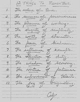

12 Things To Remember
8/1/2010
12 Things To Remember
C. Allyn Brown, Jr.
1. The VALUE of time.
2. The SUCCESS of perserverance.
3. The PLEASURE of working.
4. The DIGNITY of simplicity.
5. The WORTH of character.
6. The POWER of kindness.
7. The INFLUENCE of example.
8. The OBLIGATION of duty.
9. The WISDOM of economy.
10. The VIRTUE of patience.
11. The IMPROVEMENT of talent.
12. The JOY of originating.
{kind=link}

Mr. C. Allyn Brown, Jr. was a teacher for 40+ years and every student he taught and who entered his classroom received a copy of his "12 Things To Be Remember". (He misspelled "perseverance" on purpose to see how many were really reading it and paying attention to detail.) The list has been passed down for years to more people than he could have imagined and even made it to the Senate floor in Washington where it was read by the Senate Chaplain. While applicable to all people, if you read through the list through the eyes of a ventriloquist, you will see the appropriate extra value of this list, worthy of posting where it can be reviewed frequently. My special thanks to Jeff Brown for sending me a copy of this list in his Father's original handwriting and format as it was given to his students.